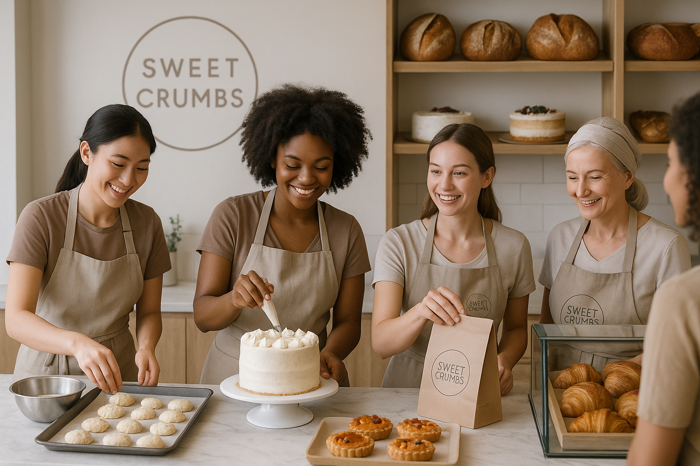

Наша Команда
Наша команда — это сердце Sweet Crumbs. Это пекари, которые начинают свой день до рассвета, чтобы всё было готово к вашему утру. Это бариста, знающие ваш любимый напиток. Это люди, объединённые любовью к делу, к людям и к вкусной еде.
О Нас
Sweet Crumbs — это больше, чем просто пекарня. Это уютное место, где аромат свежей выпечки и тёплого кофе наполняет пространство, а каждый гость чувствует себя как дома. Мы открылись с мечтой дарить радость и вкусные моменты каждому посетителю.
Наша История
История Sweet Crumbs началась с девочки, которая мечтала открыть собственную пекарню в Санкт-Петербурге. Её вдохновляли французские булочные, домашнее печенье бабушки и волшебство раннего утра с чашкой латте. Годы обучения, путешествий и упорства сделали эту мечту реальностью. Сегодня Sweet Crumbs — это команда людей, разделяющих ту же страсть.
Наша Миссия
Мы стремимся создавать вкусную, честную и красивую выпечку из качественных ингредиентов. Наша цель — не просто продавать продукты, а дарить моменты уюта, вдохновения и тепла каждому, кто заходит к нам на огонёк.
Наша Выпечка

От классических круассанов до авторских тартов — всё в нашей витрине сделано вручную и с любовью. Мы печем каждое утро, чтобы вы могли наслаждаться свежестью, хрустом и ароматом настоящей выпечки, как во Франции.
Наш Кофе
Наши бариста варят кофе, который подчеркнёт вкус десертов и подарит ощущение уюта. Мы используем только отборные зерна и любим играть с авторскими напитками, чтобы каждый нашёл что-то своё — от классического эспрессо до матча латте.